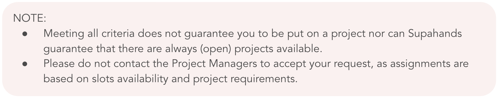
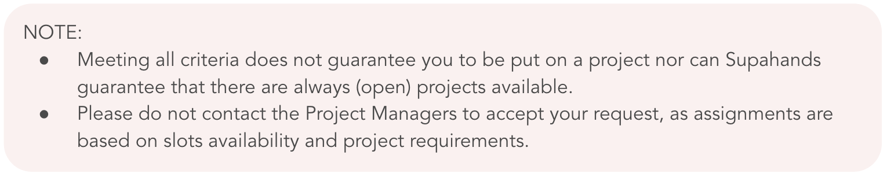
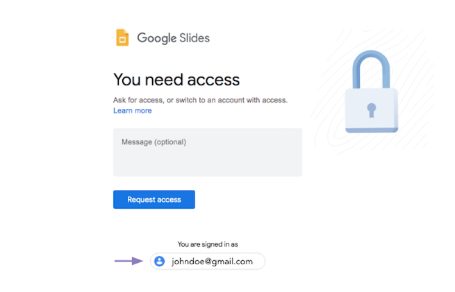
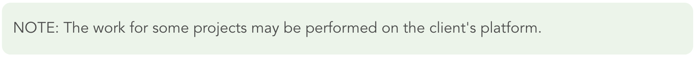
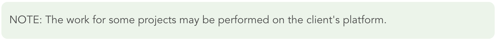

How to Join Projects
Last reviewed: 24 July 2020
How to Join Projects
How to join projects
There are currently two ways to join a project depending on the project type.
1. Request to Join
Need more help? Email SupaAgent Hub.
1. Request to Join
- On Workplace, go to New Projects.
- Click the “Request to Join” button on any available project. The project will now appear in your My Projects > Requested tab.
- Wait for your request to be approved by a Project Manager.
- Once approved, you may be required to sit for a Tutorial or Assessment before being able to start the project.
- On Workplace, go to New Projects.
- Click the "Join Queue" button on any available project.
- Note your Tutorial timeslot. Your timeslot will only be held for an additional 10 minutes if you are late. Here's why.
- The project will now appear on Workplace > Projects in Queue.
Need more help? Email SupaAgent Hub.
Request to Join Project
Request to Join Project
How do I join a project?
To join a project, watch this tutorial video or follow these steps:
- Log in to Workplace and go to Available Projects section. You can also click View All to see more projects.
- Click on the project name you're interested in, and make sure you meet all project-specific requirements such as project types qualification and the project requirements.
- Click the Request to Join button. Some projects might require you to join a Project Queue and pass a project assessment.
- If you’re assigned to a project, you will receive an email to click Commit on Workplace. You can do this by going to the Pending Commitment tab on the Workplace homepage.
How long does it take me to get accepted?
In general, after you click the Request to Join button, it can take a few days to a few months to get accepted. Acceptance to project depends on availability and requirements. Please note that notification will only be sent to you if you are accepted to the project.
Need more help? Email SupaAgent Hub.
Need more help? Email SupaAgent Hub.
What if I requested to join a project, but have not been accepted (yet)?
If you haven't been accepted to the project that you have requested to join,
you can try to request to join other projects in which interest you and for which you meet the project-specific requirements.
To increase your chances of getting accepted on to projects you can also try to unlock more
project types.
If the projects you requested to join are full, then please be patient while our team is working hard to bring in more projects as well as to get them ready to be pushed out to SupaAgents.

Need more help? Email SupaAgent Hub.
If the projects you requested to join are full, then please be patient while our team is working hard to bring in more projects as well as to get them ready to be pushed out to SupaAgents.

Need more help? Email SupaAgent Hub.
Is there a limit for the number of projects I can request to join or can get accepted to?
No, there is no limit on the amount of projects you can request to join or can get accepted to. Do ensure that you are able to meet the project requirements for all of them. However, please note that some projects have
restriction in place.
Need more help? Email SupaAgent Hub.
Need more help? Email SupaAgent Hub.
What is a project requirement?
A project requirement is a minimum number of hours or units that you must fulfill daily or weekly. Should you fail to meet the project requirements, then you may be removed from the project or receive a low rating, depending on your performance.
Need more help? Email SupaAgent Hub.
Need more help? Email SupaAgent Hub.
Where can I find the project requirements for a project?
The project requirements can be found on the Details tab of the project on Workplace.
- Go to Workplace.
- Click on the project you're interested in.
- On the Details tab, sroll down to the Project Requirements section.
What if the project requirements have not been set?
This means that there is no project requirements in terms of the number of hours or units that you must either daily or weekly fulfill in order to successfully stay on the project (after being accepted).
Need more help? Email SupaAgent Hub.
Need more help? Email SupaAgent Hub.
I see some projects with the remark "Restricted from 1 other project(s)." What does it mean?
When a project is restricted from another project, it means that you can request to join either one, but not both.
Project restrictions are applied for a variety of reasons such as if the 2 clients are competitors. They work both ways i.e. if Project A is restricted from Project B, Project B is also restricted from Project A. Thus if you request to join Project A, you will be blocked from requesting to join Project B and vice versa. If you would like to request to join Project B instead, simply cancel your request on Project A and proceed to request to join Project B.
Sometimes more than 2 projects can be restricted from each other. For example, if Project A, Project B, and Project C are restricted from each other, you can only request to join one of them at a time.
Need more help? Email SupaAgent Hub.
Project restrictions are applied for a variety of reasons such as if the 2 clients are competitors. They work both ways i.e. if Project A is restricted from Project B, Project B is also restricted from Project A. Thus if you request to join Project A, you will be blocked from requesting to join Project B and vice versa. If you would like to request to join Project B instead, simply cancel your request on Project A and proceed to request to join Project B.
Sometimes more than 2 projects can be restricted from each other. For example, if Project A, Project B, and Project C are restricted from each other, you can only request to join one of them at a time.
Need more help? Email SupaAgent Hub.
Accept Project
How do I know if I'm accepted to a project?
Once you are accepted (also known as "assigned") to the project, you will receive an email and a notification on Workplace. The project will have moved from the Requested tab to the Pending Commit tab on Workplace.
Need more help? Email SupaAgent Hub.
Need more help? Email SupaAgent Hub.
What is the Commit feature?
Once you’re assigned to a project and passed the project assessment, you will receive an email as well a notification on Workplace to confirm your Commitment.
You can do this by going to the Pending Commitment tab on your homepage or Projects page on Workplace.
If you've requested to join a project, have been assigned/accepted to a project but the project status has been set to Full, then the project will be transferred from the Pending Commit to Requested tab on Workplace. Some projects require you to complete a SupaTutorial before you are able to hit the Commit button.
Need more help? Email SupaAgent Hub.
- If you are able and willing to commit (please check the project requirements), then you should hit the Commit button. If the project has started and it appears that you did not work on the project according to the project requirements, then this might result in removal from the project and a low rating.
- If you are not able or willing to commit, then you can click on the Decline button. This will not affect your rating or the chances of getting assigned to future projects.
If you've requested to join a project, have been assigned/accepted to a project but the project status has been set to Full, then the project will be transferred from the Pending Commit to Requested tab on Workplace. Some projects require you to complete a SupaTutorial before you are able to hit the Commit button.
Need more help? Email SupaAgent Hub.
Why was I unassigned from a project?
Slots for SupaAgents in a project usually fill up fast. If you are delayed in clicking the Commit button or passing the assessment, you may be unassigned to avoid the frustration of joining the project only to find there's no more tasks to do. If you are unassigned, you won't be able to join the project.
Need more help? Email SupaAgent Hub.
Need more help? Email SupaAgent Hub.
Project Assessment
What is a project assessment?
Project assessment is an assessment that SupaAgents need to pass to be considered for a slot in the project. It has questions specific to the project, thus helping you to familiarise yourself with the project before being accepted.
Project assessments are usually presented in Google Form or SupaTutorial.
Need more help? Email SupaAgent Hub.
Project assessments are usually presented in Google Form or SupaTutorial.
Need more help? Email SupaAgent Hub.
Where can I take the project assessment?
The link to the project assessment can be found on the Details tab of the project on Workplace.
Need more help? Email SupaAgent Hub.
- Go to Workplace
- Click on the project you're interested in
- On the Details tab, you should see a URL to take the assessment.
Need more help? Email SupaAgent Hub.
I passed the project assessment, but why am I not being added to the project?
This usually happens if the project already has enough SupaAgents. You can keep your request in the project, as more slots might open up in the future.
Need more help? Email SupaAgent Hub.
Need more help? Email SupaAgent Hub.
What is SupaTutorial?
SupaTutorial is a platform for you to take the project assessment that mimics the project itself. It is currently only available for Image Annotation projects.
Need more help? Email SupaAgent Hub.
Need more help? Email SupaAgent Hub.
Join Project Queue
Quick Guide
What is a project queue?

A project queue is a new way of joining a project on Workplace. Each SupaAgent who joins a project queue will be assigned a tutorial slot.
Every project queue has an allocated number of tutorial slots. Once the queue is full, no more tutorial slots will be assigned.
For further information please refer to our Supahands Project Queue terms and conditions.
Need more help? Email SupaAgent Hub.
What is a tutorial timeslot?
A tutorial timeslot refers to the start time allocated for you to take a project tutorial.
It is your responsibility to make sure you are on time for your tutorial. If you are late, the system will only hold your tutorial slot for an additional 10 minutes. After this grace period, you will not be able to take the project tutorial.
Need more help? Email SupaAgent Hub.
It is your responsibility to make sure you are on time for your tutorial. If you are late, the system will only hold your tutorial slot for an additional 10 minutes. After this grace period, you will not be able to take the project tutorial.
Need more help? Email SupaAgent Hub.
How can I get a tutorial slot?
Tutorial slots are assigned to SupaAgents who have successfully joined a project queue. Once a project queue is full, no
more tutorial slots will be available.
Need more help? Email SupaAgent Hub.
Need more help? Email SupaAgent Hub.
What projects have a queue system?
Currently, the Supahands Queue system is being trialled on Image Annotation projects. This is being carried
out on a case by case basis.
In the future, we hope to roll out Queue across all projects. Thank you for being patient with us in the
meantime.
Need more help? Email SupaAgent Hub.
Need more help? Email SupaAgent Hub.
What are the project queue terms and conditions?
The Supahands Project Queue process is subject to change at any time at Supahands’ discretion.
- Due to the high demand for work and a competitive workforce, eligibility and availability of tasks are not guaranteed once you join a queue.
- A SupaAgent’s position in the queue cannot be sold, transferred, assigned or otherwise provided to anyone else. Evidence of such behaviour by any SupaAgent could lead to a suspension from the Supahands platform.
- When a SupaAgent leaves the queue, this action is final and cannot be undone.
- Supahands reserves the right in its sole discretion to disqualify any individual it finds to be tampering with the Project Queue process or the operation of entering a queue and/or to be acting in violation of these Terms and Conditions or in an unsportsmanlike or disruptive manner. Any attempt by any person to undermine the legitimate operation of the Supahands Project Queue process may be a violation of criminal and civil law, and, should such an attempt be made, Supahands reserves the right to seek damages from any such person to the fullest extent permitted by law.
Who can join a project queue?
Any SupaAgent who sees the “Join Queue” button is eligible to join.
Need more help? Email SupaAgent Hub.
Need more help? Email SupaAgent Hub.
When can I join a project queue?
As soon as a new project (with the queue system) is launched, all eligible SupaAgents are welcome to join the project queue.
Need more help? Email SupaAgent Hub.
Need more help? Email SupaAgent Hub.
How can I find my tutorial time slot?

Once you have successfully joined a project queue:
- Go to Workplace.
- Scroll down to Projects in Queue.
- Find the project you’re looking for.
- The tutorial time slot will be displayed in the same row.
- To access the Project Guide, click the blue View Details button.
How do I leave a project queue?

If you would like to leave a project queue:
- Go to Workplace.
- Scroll down to Projects in Queue.
- Find the project you’re looking for.
- Click the blue View Details button.
- Scroll down and click the red Leave Queue button.
- A pop up will appear. Click Leave Queue button again.
Need more help? Email SupaAgent Hub.
How many project queues can I join?
Currently, there is no set limit on the number of project queues a SupaAgent can join. However, please make
sure that you are available for your assigned tutorial slots.
Need more help? Email SupaAgent Hub.
Need more help? Email SupaAgent Hub.
How do I start work?
Once you have been assigned to a project and have passed any prerequisites (Tutorials and/or Assessments), the project
will appear on Workplace > My Projects.
- Go to Workplace.
- Scroll to My Projects.
- Note your Tutorial timeslot. Your timeslot will only be held for an additional 10 minutes if you are late.
- Click the green Work button.
Tutorial
How should I get ready for the tutorial?
There are no shortcuts here! We strongly advise you to study the Project Guide and review all the examples
given.

To access the Project Guide:
To access the Project Guide:
- Go to Workplace.
- Scroll down to Projects in Queue.
- Find the project you’re looking for.
- Click the blue View Details button.
- Go to Stage 1.
- Click Study the Project Guide.
How long does a project tutorial take?
The time it takes to complete a tutorial varies from SupaAgent to SupaAgent.
The duration of each tutorial slot varies depending on the project. In general, tutorials should last no longer than 60 minutes.
Need more help? Email SupaAgent Hub.
The duration of each tutorial slot varies depending on the project. In general, tutorials should last no longer than 60 minutes.
Need more help? Email SupaAgent Hub.
How will I know when it is my turn to do the project tutorial?
When you join a project queue, your tutorial start and end time will be displayed in a bright yellow box. See the image below.
Once you are given a timeslot, we highly recommend setting an alert/reminder on your mobile phone and/or computer. If you’re late, we’ll only hold your tutorial slot for an additional ten minutes.
Need more help? Email SupaAgent Hub.
Once you are given a timeslot, we highly recommend setting an alert/reminder on your mobile phone and/or computer. If you’re late, we’ll only hold your tutorial slot for an additional ten minutes.
Need more help? Email SupaAgent Hub.
What happens if I am unable to start the tutorial when it’s my turn?
Each SupaAgent is given a 10 minute grace period from their allocated start time.
If you arrive 10 minutes late and the tutorial duration is 60 minutes, you will only have 50 minutes remaining to complete the tutorial.
If you arrive 10 minutes after the tutorial start time, you will no longer be allowed to take the tutorial. This is because we want to make sure everyone has a fair shot at working online with Supahands. The grace period ensures a constant flow in the queue system and gives more SupaAgents an opportunity to complete a project tutorial.
Need more help? Email SupaAgent Hub.
If you arrive 10 minutes after the tutorial start time, you will no longer be allowed to take the tutorial. This is because we want to make sure everyone has a fair shot at working online with Supahands. The grace period ensures a constant flow in the queue system and gives more SupaAgents an opportunity to complete a project tutorial.
Need more help? Email SupaAgent Hub.
My tutorial page timed out/leads me to a 401 error page. What should I do?
If you are unable to complete the tutorial in the allotted time, you will no longer have access to the
tutorial.
If the project queue is still open or reopens again, you may rejoin and wait for the next available tutorial slot.
Need more help? Email SupaAgent Hub.
If the project queue is still open or reopens again, you may rejoin and wait for the next available tutorial slot.
Need more help? Email SupaAgent Hub.
Why will my tutorial slot be held for only 10 minutes?
We want to make sure everyone has a fair shot at working online with Supahands. The grace period ensures a
constant flow in the queue system and gives more SupaAgents an opportunity to complete a project tutorial.
Need more help? Email SupaAgent Hub.
Need more help? Email SupaAgent Hub.
I did not manage to complete the project tutorial. How many times am I allowed to try again?
There are no limits on retaking the project tutorial. However, you will need to rejoin the project queue (if
it is still open). This is so everyone has a fair shot at working online with Supahands.
Need more help? Email SupaAgent Hub.
Need more help? Email SupaAgent Hub.
What happens if I don’t finish the tutorial or assessment in time?
Unfortunately, this means you will be required to re-join the project queue (if it is still open or reopens). This is to make sure nobody “hogs” the queue process and ensures every SupaAgent has an equal opportunity to take project tutorials/assessments.
Need more help? Email SupaAgent Hub.
Need more help? Email SupaAgent Hub.
I passed the project tutorial but did not get assigned to the project. Why?
In the unlikely event that this happens, please contact SupaAgent Hub immediately.
Need more help? Email SupaAgent Hub.
Need more help? Email SupaAgent Hub.
FAQs
Why do I need to wait in a queue to join a project?
We want to make sure everyone has a fair shot at working online with Supahands. To
help with that, we require every SupaAgent to join a queue and wait in line for a tutorial slot.
Need more help? Email SupaAgent Hub.
Need more help? Email SupaAgent Hub.
Will I get onto a project if I join a queue?
No, joining a project queue does not guarantee a position in a project. You will still need to pass the project
tutorial
or assessment in the allocated time frame.
Need more help? Email SupaAgent Hub.
Need more help? Email SupaAgent Hub.
I left a project queue by accident. Can I get my original tutorial slot back?
Unfortunately, this is not possible. You are welcome to re-join the queue if the project is still in progress and
accepting SupaAgents.
Need more help? Email SupaAgent Hub.
Need more help? Email SupaAgent Hub.
How can I get a higher chance of getting on a project queue?
Every SupaAgent has a fair shot at working online with Supahands.
Find out about new projects as soon as they launch on Workplace by joining the #notif-avail_projects channel on Slack. Don’t forget to turn on your notifications on your Slack app too.
Need more help? Email SupaAgent Hub.
Find out about new projects as soon as they launch on Workplace by joining the #notif-avail_projects channel on Slack. Don’t forget to turn on your notifications on your Slack app too.
Need more help? Email SupaAgent Hub.
Do my SupaAgent ratings and Workplace labels impact my position in the queue?
The Supahands project queue process is bias-free. Every eligible* SupaAgent is put on an equal playing field, whether you’re a
newbie or a veteran SupaAgent. We do, however, recommend studying the Project Guide whilst you wait for your tutorial slot.
This
is so you’re set up for success when it’s your turn to take the project tutorial or assessment.
*To be eligible for a particular project, you must have the correct labels.
Need more help? Email SupaAgent Hub.
*To be eligible for a particular project, you must have the correct labels.
Need more help? Email SupaAgent Hub.
Why do we need labels if everyone has to join a project queue?
We are rolling out the project queue system on a case by case basis. This means that for some projects, you will
still
require certain labels to qualify. We are looking to move towards a fully-automated queue system on Workplace, so
please
be patient with us as we transition.
Need more help? Email SupaAgent Hub.
Need more help? Email SupaAgent Hub.
I’ve worked on a similar project before. Will I get priority access in the queue?
With the Supahands queue system, every SupaAgent starts on equal ground when they join a project queue.
Note: A tutorial slot does not guarantee a place on the project. Only SupaAgents who study the project guide and complete the tutorial in the allocated time will be assigned a place on the project.
Need more help? Email SupaAgent Hub.
Note: A tutorial slot does not guarantee a place on the project. Only SupaAgents who study the project guide and complete the tutorial in the allocated time will be assigned a place on the project.
Need more help? Email SupaAgent Hub.
Do I have to refresh the page when I am in the queue?
We built the queue system to give SupaAgents the freedom and flexibility during the wait. There is no need to
refresh
the page as your tutorial slot is guaranteed once you join a project queue.
However, we highly recommend setting an alert/reminder on your mobile phone and/or computer. If you’re late, we’ll only hold your tutorial slot for an additional ten minutes.
Need more help? Email SupaAgent Hub.
However, we highly recommend setting an alert/reminder on your mobile phone and/or computer. If you’re late, we’ll only hold your tutorial slot for an additional ten minutes.
Need more help? Email SupaAgent Hub.
The online queue was full, but it opened again. How is this possible?
On occasion, certain projects will require more SupaAgents after a given period of time. There could be a number of
reasons for this. For example, when there is an increase in the number of available tasks, or when existing
SupaAgents
don’t meet the required accuracy threshold.
Need more help? Email SupaAgent Hub.
Need more help? Email SupaAgent Hub.
Work on Project
Work on Project
I have been accepted to a project, what do I need to do next?
Once you have been accepted to the project, you will receive an email to confirm your commitment. After clicking the Commit button on Workplace, you will have access to the relevant materials and the work files.
Check out this tutorial video for more details on projects, unit rates and timesheets.
Need more help? Email SupaAgent Hub.
- Go through all the project materials. These could include Written Guidelines and Video Guidelines. The project materials can be found in the Project Kit under the Details tab in the project page.
- You will be added to a dedicated project Slack channel where project-specific communications and updates shall be shared with you and other accepted SupaAgents. Regularly check for updates and ask questions here if you need help from the Project Manager and other SupaAgents.
- Once you fully understand the project materials and the Project Manager has mentioned in Slack that you can work, click on Work Files to start working.
Check out this tutorial video for more details on projects, unit rates and timesheets.
Need more help? Email SupaAgent Hub.
Can I use my mobile phone to work?
It is not recommended to work with your mobile phone as the tasks are designed to be worked on from a computer. Working with your mobile phone also might affect the quality of your work, thus affecting the earnings you may receive.
Need more help? Email SupaAgent Hub.
Need more help? Email SupaAgent Hub.
What is a project kit?
The Project Kit on the Project Details tab is the place to find the Written Guidelines and the Work Files. Sometimes it has links to Video Guidelines and/or the SupaTutorial too.
Need more help? Email SupaAgent Hub.
Need more help? Email SupaAgent Hub.
What if I can't access the project kit?
First, make sure you are signed in to the Gmail account that you used to register as a SupaAgent. You can check this from the bottom of Request Access page.

If you are not signed in to your SupaAgent email address, do the following steps:
If you are not signed in to your SupaAgent email address, do the following steps:
- Log out of all current Google accounts.
- Clear your browser cache.
- Log in to your Gmail account that you used to register as a SupaAgent.
- Try accessing the project kit again.
What if I'm not added to the project channel on Slack?
Please contact the SupaAgent Hub via email (supaagent.hub@supahands.com) or send a Slack direct message to SupaAgent Hub.
Need more help? Email SupaAgent Hub.
Need more help? Email SupaAgent Hub.
Where can I start work?
After clicking the Commit button, you will have access to the Project Kit. Click on Work Files to start working. Make sure you read and understand the guidelines, and check the project channel on Slack before working.

Need more help? Email SupaAgent Hub.

Need more help? Email SupaAgent Hub.
Why does it say "You're all caught up" when I start work?
This means the tasks have already finished. Check out the project channel on Slack to find out whether the project has other batches of work incoming.
Need more help? Email SupaAgent Hub.
Need more help? Email SupaAgent Hub.
What is rework?
In some projects, if the task you submitted was found to be inaccurate, you may be allowed to redo the task (rework) within a specific timeline set by the Project Manager.
Need more help? Email SupaAgent Hub.
Need more help? Email SupaAgent Hub.
What is QC?
Quality Control (QC) is a stage whereby the Project Manager checks the accuracy and quality of your tasks. Your final amount of approved work is determined based on the QC results, and you will be paid only for the approved work.
Need more help? Email SupaAgent Hub.
Need more help? Email SupaAgent Hub.
Why am I removed from a project?
Removal (also known as "deactivation) from a project is usually due to any one of the following reasons:
Need more help? Email SupaAgent Hub.
- You did not meet the required accuracy rate.
- You did not complete the tasks within the given time.
- You were found to be conducting suspicious activity in the project.
Need more help? Email SupaAgent Hub.
My Timesheets
How much can I earn?
In general, the amount of your earnings depends on:
Need more help? Email SupaAgent Hub.
- The amount of work you’ve done (units) that have been approved by the Project Manager
- The rate per unit (in USD)
Need more help? Email SupaAgent Hub.
When will my timesheet be updated?
After you’ve done work for a project, the Project Manager will do a Quality Control (QC) process and upload a Timesheet for your approved work. You will get a notification on Workplace and email when your timesheet's uploaded.
Usually - depending on the Project Manager as well the (length of the) project - timesheets will be uploaded at the beginning of every month. For example, if you have done work in April, then you will be able to see your Timesheet on Workplace at the beginning of May; the payment month will be April.
Stay tuned on each project channel for updates regarding timesheet from your Project Manager.
Need more help? Email SupaAgent Hub.
Usually - depending on the Project Manager as well the (length of the) project - timesheets will be uploaded at the beginning of every month. For example, if you have done work in April, then you will be able to see your Timesheet on Workplace at the beginning of May; the payment month will be April.
Stay tuned on each project channel for updates regarding timesheet from your Project Manager.
Need more help? Email SupaAgent Hub.
What are the timesheet statuses?
Why is my timesheet different from the number of tasks I've done?
After you’ve done work for a project, the Project Manager will do a Quality Control (QC) and upload a timesheet for your approved work only.
Need more help? Email SupaAgent Hub.
Need more help? Email SupaAgent Hub.
Support
I'm unsure of my answer. What should I do?
Always start with reading the Guidelines. If anything is unclear, never assume, but ask questions instead. You can use the Slack project channel to get suggestions from your fellow SupaAgents and your Project Manager.
Need more help? Email SupaAgent Hub.
Need more help? Email SupaAgent Hub.
What are Supahands’ standard office and support hours?
The standard office and support hours are from Monday to Friday, from 9.00 hrs to 18.00 hrs GMT+8 excluding public holidays in Kuala Lumpur, Malaysia.
Need more help? Email SupaAgent Hub.
Need more help? Email SupaAgent Hub.